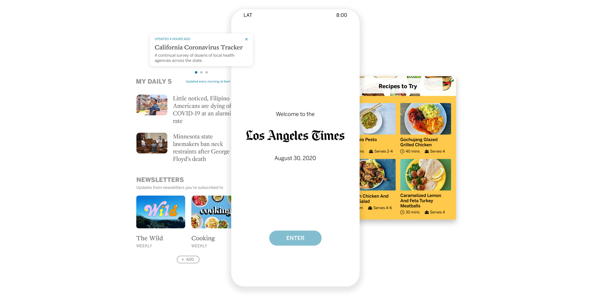

Los Angeles Times App Redesign
Role
Project Manager
UX/UI Designer
Tools
Design Thinking
Figma, Miro
Timeline
Summer 2020
12 weeks
Team
Los Angeles Times Innovation Lab
Designing for Californians
Informing residents on the pandemic & politics
Our initial challenge was to design features that would make the LA Times’ app especially relevant to Californians’ daily lives as they navigate the local impact of the pandemic and politics. The LA Times has incredible content, such as the fire articles and interactive map shown below. Our job was to display that content creatively within the app. The final design followed the existing design closely, allowing us to focus on expanding core features.
What we looked into
How do readers use news apps?
To understand app use broadly, we talked to 23 users about their news app habits. Overall, we heard that engaging in the news is a ton of work– there were users on opposite ends of the spectrum: those who put intention behind their consumption through daily timers and self-developed algorithms, vs. those who simply saw news if it came across their social media feed. We decided to focus on the latter, whose experience is well encapsulated in the following quote:
What else stood out:
-
Users decided to download or delete apps based on how useful they were based on their personal needs
-
Users decided to use news apps to avoid clunky mobile web experiences, important for app to be differentiated with exclusive content or more visually appealing formats, or unique features such as personalization
-
Passive app use was widespread– people only used news apps when they had nothing else to do, when they wake up, in the bathroom, and this use was mostly triggered by notifications or email newsletters
How do LA Times’ reads engage with the Times?
To understand how readers interact with LA Times specifically, we extracted usage data from Google Analytics, Chartbeat, and the LA Times’ Intranet for analysis. We focused on some key questions such as: Which type of content do users visit frequent and convert on? What topics are popular based on different locations?
The numbers said:
- The bounce rate in June 2020 was 34%, showing many users stay on the homepage without exploring different tabs.
- Overall, utility articles constituted 46% of Top 100 articles ranked by sessions per user, meaning people actively come back to high utility content. After COVID hit, the COVID-19 Tracker led to the most conversions.
How do competitors approach the same problem?
To survey the playing field, we examined multiple direct and indirect competitors to see how users have been interacting with news elsewhere and how we can improve on our end. For every competitor, we aimed to answer these two questions, which were derived from prominent user insights:
- How does this app differentiate from the mobile web experience?
- Active use: How does this app create habits of opening the app actively, instead of during passive moments? How does this app trigger users to open the app in their free time? How does this app motivate users to open the app without push alerts?
Quart’z app design below particularly excited us due to their focus on giving subscribers a unique experience that highlighted creative content.

Narrowing the design scope
Following our preliminary research, we shifted our design focus to the following question:
In answering this, we decided to focus on increasing utility and personalization within the app. Increasing utility would provide users with helpful information that empowers them to make informed life decisions, while increasing personalization would enable users to curate interesting content that is relevant to them.
Prototypes
The following designs were reached over the course of 6 weeks through 5 rounds of testing with over 50 different users total.
Personalization: My News section
We proposed adding the following modules to a completely separate “My News” section that would be curated by and for users, based on a new feature that would allow users to follow topics and content they were interested in. Users loved this approach to personalization– many even said they would love for this to replace the current LAT homepage!
NEW FEATURE
My Daily 5
My Daily 5
suggestions for users based on their follows and reading history to filter down the sea of articles they face everyday. Opens in a carousel view for easy access to entire series.
NEW FEATURE
Latest
Latest
a chronological feed of update from a user’s follows, with the option to further expand this into an infinite scroll.
NEW FEATURE
Discover
Discover
suggestions that users may be interested in based on their follows and reading history.
NEW FEATURE
Newsletters
Newsletters
a way for users to access their subscriptions when not in their email or on the web. Can be the beginning of further cross-platform syncing.

NEW FEATURE
Following
Following
a chronological feed of update from a user’s follows, with the option to further expand this into an infinite scroll.
Utility: Integrated Modules
In designing for utility, we first had to define what high utility content was. Internally, the LA Times defines this content as big builds and evergreen content that remains relevant for weeks or months beyond its initial publishing. This can be tracked by analyzing which articles have the most visits per user over time. While these articles can be seen as popular, this data also points to the fact that users greatly value such information, especially as they relate to health and safety. Externally, users simply see this content as creative and artistic, according to interviews. We moved forward with the internal definition at first to explore a newer design territory on the user side.
The LAT's year-end showcase of their best internally-defined "utility" content.
Our first approach consisted of a sticky menu in the homepage where users could access and pin a curated list of high utility content. It allowed them to view information without clicking into an article, and kept relevant content easily accessible.
Users were excited by this idea. However, they were initially confused about what “Pinned” meant and only understood better after exploring the different types of content that could be included. Though the placement on the homepage was ideal for access, users thought it was too small of a space for exploring the content.
We also realized that it was confusing for users to see all the utility content under one name, so we broadened our definition of utility to include more content and provide users with more context, now including lifestyle guides such as financial and career advice (beyond evergreen content and big builds), and re-categorized this content to break it down to several action-oriented service journalism items.
Additionally, users confirmed what we learned from analytics– they were unlikely to go out of their way to visit other sections other than those they frequented. The final design proposal below intentionally integrated high utility content into widely used aspects of the feed and took the onus off of users to organize the content themselves.
NEW FEATURE
Swipeable article banners
Swipeable article banners
this is the first content users see when users open the home feed. Editors will determine what high-utility content is displayed here.
NEW FEATURE
Featured utility content
Featured utility content
visually distinct displays of existing utility articles as part of news feeds that are specific to the section they are nested under. Editors will determine what high-utility content is displayed here.
NEW FEATURE
Search that includes popular content
Search that includes popular content
a list of popular articles based on user statistics in the last hour(s) or day, which can be focused on number of clicks or length of reader engagement.
Reflection
What I learned
A ton! In terms of audience and stakeholders, this was the largest project I’ve worked on. Dealing with practical constraints and blockers, such as the engineering team’s capacity, taught me to envision solutions at different levels that could accommodate for feasibility. It was also a challenge to balance goals from the newsroom on story visibility, the business side on revenue, and our own team on staying user-centered.
On the people side, user research for this project was incredibly fun as well, since people’s news habits varied greatly– some interviewees even coded up their own RSS feeds! We also met a lot of loyal LA Times readers, and it was heartwarming to see the impact the newspaper had made on their lives for decades.
What I would’ve done differently
There were points during the Utility portion of this project during which we pursued an idea for maybe more time than we should have. In future projects, I aim to take initiative in following my intuition and analyzing user research findings to explore a new path earlier.